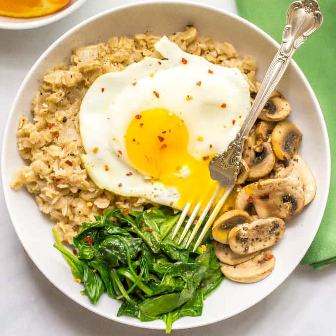

Oatmeal For Lazy Lifters

I can eat this all day. I love the savory and spicy oatmeal taste,
the smooth blend of oatmeal, and all the oatmeal thrown
in for good measure. Mmm mmm mmm!
I'll teach you how to make this amazing dish. It's so simple, yet so
good!
Ingredients
- 1 oatmeal
- More oatmeal
- Water
- Eggs (1, 2, maybe 4 if you're like that)
- SPAM LITE
- Nongshin ramen powder
- 100% whey protein isolate coffee flavor
Directions
- Measure out exactly the amount of oatmeal you need. I like using no more than 367 flakes.
- Add water, using a 2:1 water to oatmeal ratio
- Slice spam into bite-sized pieces. Make sure you rinse the extra
sodium off before adding it to the oatmeal!
- Crack the eggs into the oatmeal/spam bowl
- Add in all remaining powders, give it a good mix
- Microwave that shit for 10 minutes
And there you have it! Maximuim protein for MAXIMUM GAINS!
Return to home page